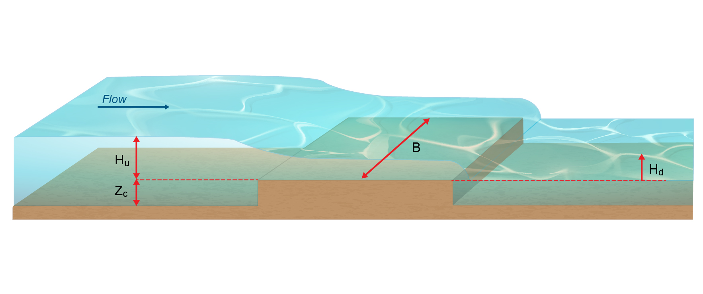
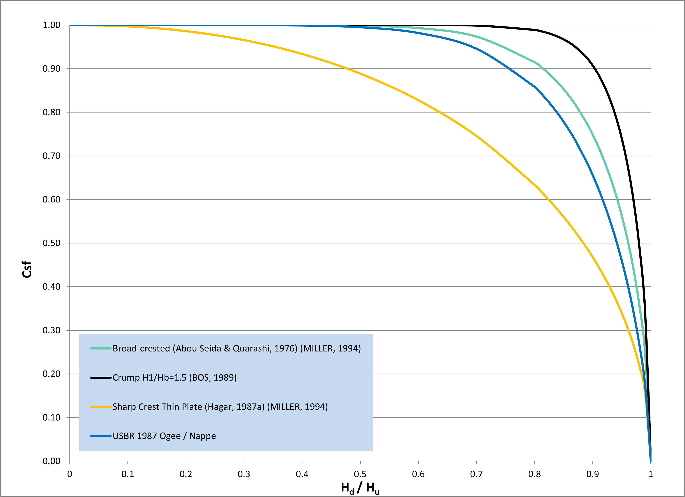
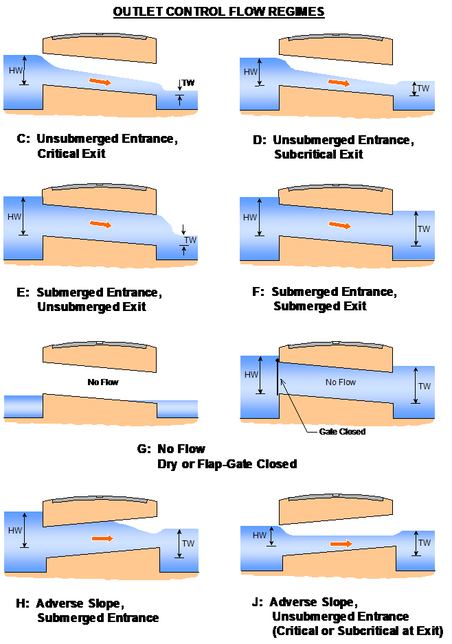
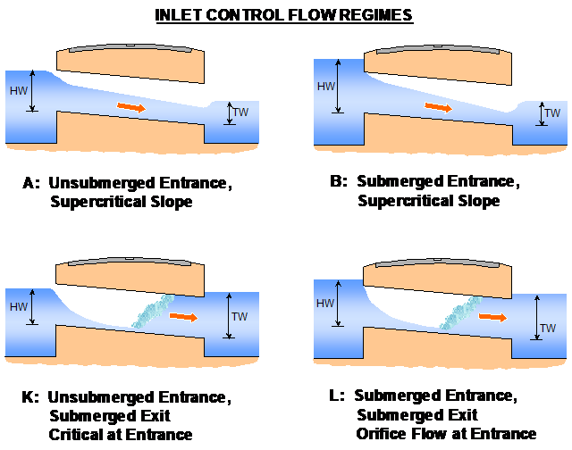
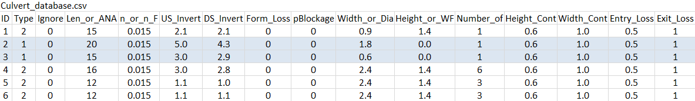
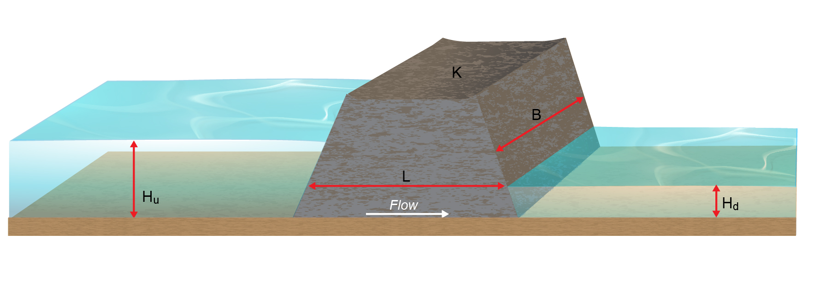
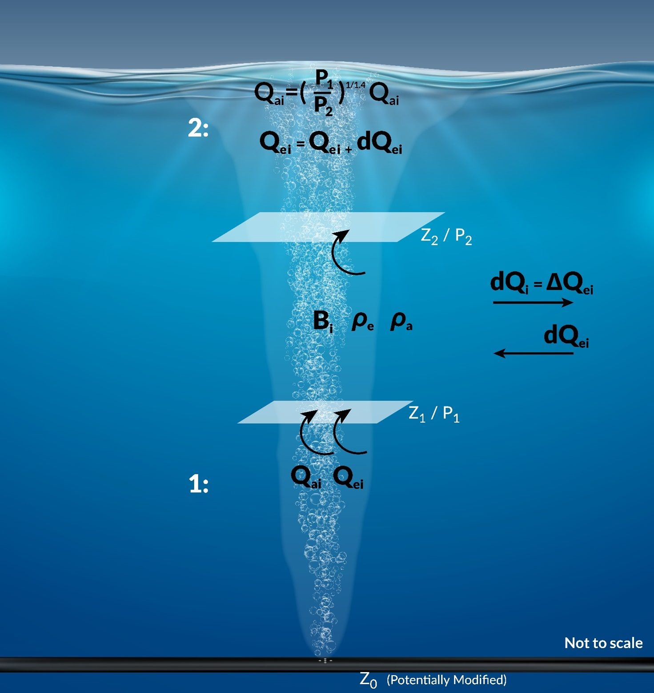
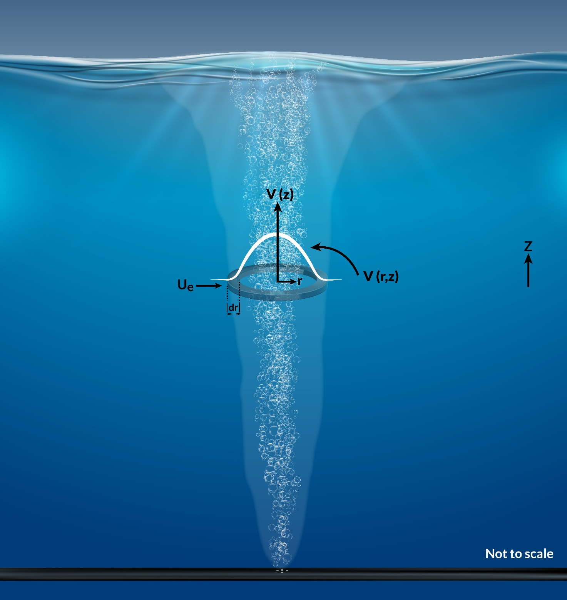
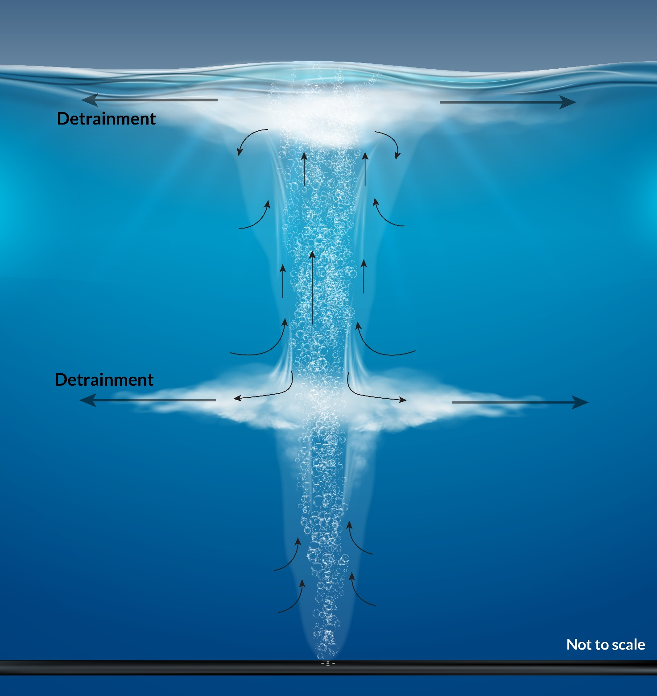

B.12 Hydraulic Structures
B.12.1 Structure Types
B.12.1.1 Weirs
Weir flow is calculated using the general weir equation with allowance for weir submergence (Equation (B.140)). Key terms are displayed in Figure B.8.
\[\begin{equation} Q = C_d B H_u^{3/2} \times \max(C_{sf}, C_{sf\_min}) \tag{B.140} \end{equation}\]
where:
- \(Q\) = discharge or flow rate (m3/s)
- \(C_d\) = weir coefficient (-)
- \(B\) = weir width (m)
- \(H_u\) = Upstream depth of water approaching the weir relative to the weir crest (m or ft)
- \(C_{sf}\) = weir submergence factor (-)
- \(C_{sf\_min}\) = minimum weir submergence factor (-)
By default, the weir width \(B\) is set either via:
- The nodestring length for nodestring structure connection types
- The average of the upstream and downstream nodestring lengths for linked nodestrings structure connection types
- The
Max Open Width command for linked zones structure connection types
The default \(B\) can be overriden via the optional user specified parameter \(B_{user}\) (Table B.8).

Figure B.8: Weir Schematic
Weir submergence factors \(C_{sf}\) are based on Miller (1994) and Bos (1989). The submergence charts for each weir type, which relate the weir submergence factor to the ratio of downstream to upstream water level, were reproduced from the literature. The Villemonte equation was then used to fit analytical expressions to these curves, expressed as:
\[\begin{equation} C_{sf} = \left( 1 - \ \left( \frac{H_{d}}{H_{u}} \right)^{a} \right)^{b} \tag{B.141} \end{equation}\]
Where:
- \(H_{u}\) = Upstream depth of water relative to the weir crest (m or ft)
- \(H_{d}\) = Downstream depth of water relative to the weir crest (m or ft)
- \(a, b\) = Model coefficients
The default variables a and b used to determine the submergence factor \(C_{sf}\) for each weir type are presented in Table B.7. Figure B.9 shows the submergence curves produced using the default values in Table B.7 to calculate \({\ C}_{sf}\).
The weir equation is transitioned back to the nonlinear shallow water equations as the weir becomes progressively submerged. A default value of \(C_{sf\_min} = 0.7\) is applied to ensure a smooth transition between the two equation sets.
| Weir Type | Cd | Ex | a | b | Default Submergence Curve |
|---|---|---|---|---|---|
| Broad-crested | 1.705 | 1.5 | 8.550 | 0.556 | Broad-crested from Abou Seida & Quarashi, 1976 (Miller, 1994) |
| Crump | 1.500 | 1.5 | 17.870 | 0.590 | Crump H1/Hb=1.5 (Bos, 1989) |
| Sharp-crested | 1.830 | 1.5 | 2.205 | 0.483 | Sharp Crest Thin Plate from Hagar, 1987a (Miller, 1994) |
| Ogee-crested | 2.210 | 1.5 | 6.992 | 0.648 | Ogee / Nappe (Miller, 1994; USBR, 1987) |

Figure B.9: Weir Submergence Curves using Villemonte Equation
Each weir property is summarised in Table B.8. Users can adjust the default values of \(C_d\) and submergence coefficients \(a, b\) to model a supported weir type using the values from Table B.7.
| Argument | Description |
|---|---|
| \(Z_c\) | Weir crest height either provided as an absolute elevation relative to datum if Flux Function == Weir (mRL) or as a dz bathymetric offset if Flux Function == Weir_dz (m) |
| \(C_d\) | Weir coefficient |
| \(Ex\) | Weir Exponent |
| \(a\) | Villemonte weir submergence coefficient a |
| \(b\) | Villemonte weir submergence coefficient b |
| \(C_{sf\_min}\) | Minimum weir submergence factor |
| \(B_{user}\) | Optional user-defined weir width override (m) |
Huxley (2004) contains benchmarking of unsubmerged and submerged weir flow to the literature.
B.12.1.2 Culverts
TUFLOW FV shares the same standard culvert equations used by TUFLOW Classic’s ESTRY 1D solver, which have been in use since the 1990s. The calculations of culvert flow and losses are carried out using techniques from “Hydraulic Charts for the Selection of Highway Culverts” and “Capacity Charts for the Hydraulic Design of Highway Culverts”, together with additional information provided in Henderson (1966). The calculations have been compared and shown to be consistent with manufacturer’s data provided by both “Rocla” and “Armco”. For benchmarking of TUFLOW’s culvert flow routines to the literature, see Huxley (2004).
Nodestring average (for single and linked nodestring connection types) or zone average (for linked zones) upstream and downstream hydraulic parameters are used to drive the culvert equations using the process described in Section B.12.2.
B.12.1.2.1 Culvert Regimes
The culvert equations support the flow regimes described in Table B.9, Figure B.10 and Figure B.11.
| Regime | Description |
|---|---|
| A | Unsubmerged entrance and exit. Critical flow at entrance. Upstream controlled with the flow control at the inlet. |
| B | Submerged entrance and unsubmerged exit. Orifice flow at entrance. Upstream controlled with the flow control at the inlet. |
| C | Unsubmerged entrance and exit. Critical flow at exit. Upstream controlled with the flow control at the culvert outlet. |
| D | Unsubmerged entrance and exit. Sub-critical flow at exit. Downstream controlled. |
| E | Submerged entrance and unsubmerged exit. Full pipe flow. Upstream controlled with the flow control at the culvert outlet. |
| F | Submerged entrance and exit. Full pipe flow. Downstream controlled. |
| G | No flow. Dry or flap-gate active. |
| H | Submerged entrance and unsubmerged exit. Adverse slope. Downstream controlled. |
| J | Unsubmerged entrance and exit. Adverse slope. Downstream controlled. |
| K | Unsubmerged entrance and submerged exit. Critical flow at entrance. Upstream controlled with the flow control at the inlet. Hydraulic jump along culvert. |
| L | Submerged entrance and exit. Orifice flow at entrance. Upstream controlled with the flow control at the inlet. Hydraulic jump along culvert. |

Figure B.10: 1D Outlet Control Culvert Flow Regimes

Figure B.11: 1D Inlet Control Culvert Flow Regimes
To trigger inlet controlled conditions, the following two conditions must be met.
- The culvert flow rate calculated based on the upstream controlled flow regime (Figure B.11) must be smaller than that of the downstream controlled flow rate
- \(H_u\) must be less than \(H_{cd} \cdot h_c\)
Where:
- \(H_{u}\) = Upstream depth of water relative to the culvert invert (m or ft)
- \(H_c\) is the culvert height (m or ft)
- \(H_{cd}\) is the critical depth factor
See Figure B.12. By default the value of \(H_{cd}\) is set to 99999, insuring that the upstream controlled flow regime is always applied once Condition 1.) above is met. The critical depth factor can be adjusted using the

Figure B.12: Culvert Schematic
B.12.1.2.2 Automatic Entry/Exit Loss Adjustment
The energy losses associated with the contraction and expansion of flow lines into and out of a structure, can be optionally automatically adjusted according to the approach and departure velocities in the upstream and downstream channels. This is particularly important where:
- There is no change in velocity magnitude and direction as water flows through a structure. In this situation, there is effectively no entrance (contraction) or exit (expansion) losses and the losses need to be reduced to zero. Examples are:
- A clear spanning bridge over a stormwater channel where there are no losses due to any obstruction to flow until the bridge deck becomes surcharged.
- Flow from one pipe to another where the pipe size remains unchanged and there is no significant bend or change in grade.
- A clear spanning bridge over a stormwater channel where there are no losses due to any obstruction to flow until the bridge deck becomes surcharged.
- There is a change in velocity, but the change does not warrant application of the full entrance and exit loss. This is the most common case where the application of the full entrance and exit loss coefficients (typically 0.5 and 1.0) will overestimate the energy loss through the structure. The full values are only representative of the situation where the approach and departure velocities are close to zero, for example, a culvert discharging from a lake into another lake where the velocity transitions from still water to fast flowing and to still water.
Entrance and exit losses are adjusted according to Equations (B.142) to (B.144) that take into account the change in velocity caused by the structure. The first equation is empirical, while the second equation to adjust exit losses can be derived from first principles. A schematic indicating approach, structure and departure velocities is provided in Figure B.13.
Automatic entry and exit loss adjustment are turned off by default. They are enabled by setting the fourth entry of the
\[\begin{equation} \Delta h = (K_{\text{entry}} + K_{\text{exit}}) \frac{V_{\text{structure}}^2}{2g} \tag{B.142} \end{equation}\]
\[\begin{equation} K_{\text{entry,adjusted}} = K_{\text{entry}} \left[ 1 - \frac{V_{\text{app}}}{V_{\text{structure}}} \right] \tag{B.143} \end{equation}\]
\[\begin{equation} K_{\text{exit,adjusted}} = K_{\text{exit}} \left[ 1 - \frac{V_{\text{dep}}}{V_{\text{structure}}} \right]^2 \tag{B.144} \end{equation}\]

Figure B.13: Culvert Approach, Structure and Departure Velocites
B.12.1.2.3 Total Energy Head
The total energy head is the sum of the pressure and velocity head as declared in Equation (B.145)
\[\begin{equation} E = H_u + \frac{V^2}{2g} \tag{B.145} \end{equation}\]
Where:
- \(E\) = Specific energy above the culvert invert or outlet (m)
- \(H\) = upstream headwater or downstream tailwater depth above invert (m)
- \(V\) = average velocity at inlet or outlet (m/s)
- \(g\) = acceleration due to gravity (m/s\(^2\))
\(E\) can optionally replace \(H\) used for culvert calculations. Doing so can improve results for culverts under high velocity / high flow conditions (for example in a main channel). The option is switched off by default and can be enabled via the fifth parameter of the
B.12.1.2.4 Culvert File
The culvert file contains a list of the culvert attributes, such as the culvert ID, culvert type, dimensions, length, upstream and downstream inverts, number of barrels, Manning’s n, entrance and exit losses. A description of the required culvert file inputs is summarised in Table B.10.
Multiple culverts can be listed within a culvert file (i.e. a unique culvert file for each culvert is not required). The culvert ID within the culvert file is used to associate a specific structure with the command line input as shown in Figure B.14.
| Header Column | Description |
|---|---|
| ID | Culvert identifier. |
| Type | 1 = circular, 2 = rectangular, 4 = gated circular (unidirectional), 5 = gated rectangular (unidirectional). |
| Ignore | If = 1 culvert is ignored (Default = 0). |
| UCS | Currently not used. |
| Len_or_ANA | Culvert length (m or ft). |
| n_or_n_F | Friction (Manning’s ‘n’). |
| US_Invert | Upstream invert level (relative to model datum: m or ft). |
| DS_Invert | Downstream invert level (relative to model datum: m or ft). |
| Form_Loss | Form loss coefficient; an additional dynamic head loss coefficient applied when culvert flow is not critical at the inlet. |
| pBlockage | % blockage (for 10%, enter 10). For rectangular culverts, the culvert width is reduced by the % Blockage, while for circular culverts the pipe diameter is reduced by the square root of the % Blockage. (Default = 0). |
| Inlet_Type | Currently not used. |
| Conn_2D | Currently not used. |
| Conn_No | Currently not used. |
| Width_or_Dia | Width for rectangular culverts or diameter for circular culverts (m or ft - see units). |
| Height_or_WF | Height for rectangular culverts (m or ft - see units). |
| Number_of | Number of culvert barrels. |
| Height_Cont | Height contraction coefficient for orifice flow at the inlet. Recommended values, 0.6 for square edged entrances to 0.8 for rounded edges. Not used for unsubmerged inlet flow conditions or outlet controlled flow regimes. Not used for C channels. Defaults to 1.0 if not specified. |
| Width_Cont | The width contraction coefficient for inlet-controlled flow. Usually 0.9 for sharp edges to 1.0 for rounded edges for R culverts. Normally set to 1.0 for C culverts. If value exceeds 1.0 or is less than or equal to zero, it is set to 1.0.Not used for outlet controlled flow regimes. Defaults to 1.0 if not specified. |
| Entry_Loss | The entry loss coefficient for outlet controlled flow (recommended value of 0.5). If not specified will default to 0.5. |
| Exit_Loss | The exit loss coefficient for outlet controlled flow (recommended value of 1.0). |

Figure B.14: Culvert File Example
B.12.1.3 Bridges
Bridge structures use the governing nonlinear shallow water equations with additional terms to represent sub-grid scale effects such as piers, abutments and bridge deck flow interference, providing a mechanism to account for energy losses around piers and similar entry or exit losses not resolved within the 2D/3D domain.
B.12.1.3.1 Form Loss Coefficient
The coefficient energy loss function allows the user to specify a form loss coefficient (FLC) as a function of velocity head (Equation (B.146)).
\[\begin{equation} \Delta H = FLC \, \frac{V^2}{2g} \tag{B.146} \end{equation}\]
where:
- \(\Delta H\) = head loss (m)
- \(FLC\) = form loss coefficient (-)
- \(V\) = velocity (m/s)
- \(g\) = acceleration due to gravity (m/s\(^2\))
Width files or blockage files can optionally be used in combination with the coefficient energy loss function. They allow the user to specify the approximate width of the structure as a function of elevation, for example to account for flow area reduction due to abutments, piers or other flow obstructions not represented by the model mesh. These files alter the effective cross sectional area at the structure, modifying the velocity in accordance with the laws of continuity.
At each timestep the upstream nodestring average bed elevation, water level and active nodestring length is used to calculate a fraction open \(frac\) from the width or blockage file as declared in Equations (B.147) and (B.149).
For a width table \((Z, W)\), the fraction open is:
\[\begin{equation} \text{frac} = \frac{1}{L\,(wl - z_b)} \int_{z_b}^{wl} W(z)\,dz \tag{B.147} \end{equation}\]
Discretised using the trapezoidal rule:
\[\begin{equation} \text{frac} = \frac{1}{L\,(wl - z_b)} \sum_{i=1}^{N-1} \frac{W_i + W_{i+1}}{2}\,(Z_{i+1}-Z_i) \tag{B.148} \end{equation}\]
For a blockage table \((Z, f)\), the fraction open is:
\[\begin{equation} \text{frac} = \frac{1}{wl - z_b} \int_{z_b}^{wl} f(z)\,dz \tag{B.149} \end{equation}\]
Discretised using the trapezoidal rule:
\[\begin{equation} \text{frac} = \frac{1}{wl - z_b} \sum_{i=1}^{N-1} \frac{f_i + f_{i+1}}{2}\,(Z_{i+1}-Z_i) \tag{B.150} \end{equation}\]
The modified cross sectional area is then:
\[\begin{equation} A' = A \cdot \text{frac} \tag{B.151} \end{equation}\]
where:
- \(W_i\) = tabulated available width at elevation \(Z_i\) (m)
- \(f_i\) = tabulated fractional opening at elevation \(Z_i\) (-)
- \(Z_i\) = tabulated elevations (m)
- \(z_b\) = average upstream bed elevation (m)
- \(wl\) = average upstream water level (m)
- \(L\) = active structure width (m)
- \(A\) = full structure area (m\(^2\))
- \(A'\) = effective structure area (m\(^2\))
- frac = effective open fraction (-)
- \(N\) = number of table points used between \(z_b\) and \(wl\)
The adjusted structure velocity is defined by:
\[\begin{equation} V' = \frac{Q}{A'} \tag{B.152} \end{equation}\]
where:
- \(V'\) = adjusted velocity (m/s)
- \(Q\) = flowrate (m\(^3\)/s)
This adjusted velocity \(V'\) is then used to assign kinetic energy losses:
\[ \Delta H = FLC \, \frac{V'^2}{2g} \tag{B.153} \]
The head loss \(\Delta H\) is added as a pressure correction term in the momentum equations and distributed to the upstream nodestring faces, where upstream refers to the side from which water is flowing.
B.12.1.3.2 Energy Loss Table
An energy table energy loss function gives users a higher level of control over the losses applied for different flow rates. The downside to this additional level of control is that the user is required to pre-calculate the expected energy losses and input via an energy file.
At each timestep the energy loss \(\Delta H\) is linearly interpolated from the energy loss file as a function of flowrate \(Q\) through the structure. The interpolated value of \(\Delta H\) is added as a pressure correction in the momentum equations.
Width or blockage files should not be used in combination with this method.
B.12.1.3.3 Energy Loss Considerations
When adapting structure loss coefficients from a 1D model or from coefficients that apply across the entire waterway, for example, from Hydraulics of Bridge Waterways (FHA 1973), the following should be noted:
- The 2D solution automatically predicts most “macro” losses due to the expansion and contraction of water through a constriction, or round a bend, provided the resolution of the grid is sufficiently fine. It is recommended that raised bridge approaches/abutments should be represented by the model topography (i.e. not included as a contribution to the form loss coefficient). A breakline using the Read GIS Z Line command may be useful for defining these topographic features. Where the waterway width varies slightly from the cumulative width of the cells across which the structure is being applied, a width file or blockage file can be used to refine the flow area and define the structure soffit within the model .
- Where the 2D model is not at a fine enough resolution to simulate the “micro” losses (e.g. from bridge piers, vena contracta, losses in the vertical (3rd) dimension), additional form loss coefficients and/or modifications to the cell widths and flow height need to be added. This can be done by using the form loss coefficient or energy file commands.
- The additional or “micro” losses, which may be derived from information in publications, such as Hydraulics of Bridge Waterways, should be distributed evenly across the waterway (i.e. rather than being too specific about the representation of each individual cell).
- The head loss across key structures should be reviewed, and if necessary, benchmarked against other methods (e.g. Hydraulics of Bridge Waterways or a secondary model). Note that a well designed 2D model will be more accurate than a 1D model if any “micro” losses are incorporated. Ultimately, the best approach is to calibrate the structure through adjustment of the additional “micro” losses - but this, of course, requires good calibration data!
B.12.1.4 User Defined Timeseries
The user defined timeseries structure type assigns flow based on user provided timeseries of time and flow.
During each simulation timestep, the model linearly interpolates the flow value for the current model time, where time is either in hours or ISODATE format depending on the selection of
The resultant flow (mass) and momentum are distributed to the downstream nodestring, linked nodestring or linked zones connection using the process described in Section B.12.2.
B.12.1.5 Porous
Flow through a porous structure follows Darcy’s law:
\[\begin{equation} Q = -K H_p B \frac{\Delta H}{L} \tag{B.154} \end{equation}\]
where:
- \(Q\) = discharge through the structure (m3/s)
- \(K\) = hydraulic conductivity (m/s)
- \(H_p\) = average of the upstream \(H_u\) and downstream \(H_d\) water depth (m)
- \(B\) = active flow width (m)
- \(\Delta H\) = head difference between upstream and downstream water levels (m)
- \(L\) = flow path length (m)
The negative sign indicates that flow occurs in the direction of decreasing hydraulic head.
Hydraulic properties are assigned using the
By default, the flow width \(B\) is set either via:
- The nodestring length for nodestring structure connection types
- The average of the upstream and downstream nodestring lengths for linked nodestrings structure connection types
- The
Max Open Width command for linked zones structure connection types
The default \(B\) can be overriden via the optional user specified parameter \(B_{user}\) (Table B.11).
| Argument | Description |
|---|---|
| \(K\) | Hydraulic conductivity (m/s) |
| \(L\) | Flowpath length (m) |
| \(B_{user}\) | Optional user-defined flow width override (m) |

Figure B.15: Porous Schematic
B.12.1.6 User Defined Matrix
The user defined matrix structure type calculates structure flow based on a tabulated relationship between upstream water level \(WL_u\), downstream water level \(WL_d\) and flow \(Q\).
During each simulation timestep, the model determines the nodestring or zone average upstream and downstream water levels. These values are then used to undertake a 2D linear interpolation of flow rate from the provided flux matrix. Values outside of the user defined matrix are extrapolated based on the nearest available flow value.
Flow (mass) and momentum are distributed to the downstream nodestring, linked nodestring or linked zones connection using the process described in Section B.12.2.
B.12.1.7 Walls
The wall structure sets the fluxes of all faces selected by the single nodestring connection to 0.0.
B.12.1.8 Bubble Plumes
The following general considerations and definitions apply:
- Bubble plumes are specified using one or more structure blocks, as above
- The calculations are undertaken for a single plume, using the flow rate specified by the user in the structure block. Thus ‘number of units/plumes’ is the number of plumes in the computational cell in which the structure is located, and the flow rate specified is the flow rate per plume, not a total flow rate
- Plumes are assumed to be independent and therefore ‘number of units’ (aka number of plumes in cell, the third argument of the
Properties command) is purely multiplicative, and is applied after completing hydrodynamic and mixing calculations for one plume - ‘Entrained’ means volume, salinity, temperature or tracer entering the existing plume from the environment
- ‘Detrained’ means volume, salinity, temperature or tracer exiting the existing plume to the environment
- Entrainment and detrainment can occur at any height, except detrainment in the bottom-most cell
- Computations start at the bottom of the water column and move upwards following the flow of air, progressively updating computed quantities
The computational method presented following uses:
- The symbology presented in Figure B.16
- The governing equations presented in Figure B.17
- The detrainment logic presented in Figure B.18

Figure B.16: Symbology used in Computational Method

Figure B.17: Governing Equations

Figure B.18: Detrainment logic
Enter routine at the deepest cell that contains the diffuser
- The air flow entering the cell, \(Q_{ai}\), is set to the user specified value (at depth or converted from atmospheric pressure value). This is air flow per plume, not a total flow rate
- The air buoyancy is computed, \(B_{ai}\) \[\begin{equation} B_{ai}=gQ_{ai} \tag{B.155} \end{equation}\]
- where
- \(B_{ai}\) is the air buoyancy flux [m\(^{4}\)s\(^{-3}\)]
- \(g\) is the acceleration due to gravity [ms\(^{-2}\)]
- \(Q_{ai}\) is the user specified or calculated air flow rate [m\(^3\)s\(^{-1}\)]
3. The total entrained water entering the cell from below, \(Q_{ei}\), is set to zero (it is the deepest cell) \[\begin{equation} Q_{ei}=0 \tag{B.156} \end{equation}\]
- where
- \(Q_{ei}\) is the total entrained volume flux in the plume, entering from the cell below [m\(^3\)s\(^{-1}\)]. This is different to \(\Delta Q_{ei}\) [m\(^3\)s\(^{-1}\)] which is the volume entrained in the computational cell considered (see Equation (B.162))
4. The total air and water plume buoyancy flux, \(B_i\), is therefore set to be the same as \(B_{ai}\) because \(Q_{ei}\) is zero \[\begin{equation} B_i=B_{ai} \tag{B.157} \end{equation}\]
- where
- \(B_i\) is the total air and water plume mixture buoyancy flux [m\(^4\)s\(^{-3}\)]
5. The local entrainment of volume in the cell is computed, \(\Delta Q_{ei}\), as a difference between the total volume flux entering the bottom of the cell (which is zero in the lowest cell) and that leaving at the top. This requires the ability to compute the volume flux at the top and bottom of the cell, and more generally at any height z above the nozzle. This is a multistage process.
- Derive governing conservation equation. Initially, and using Figure B.17, a radially symmetrical vertical velocity profile at a given height is assumed
\[\begin{equation} v\left(r,z\right)=v\left(z\right)\operatorname{e}^{-\left(\frac{\operatorname{r}^2}{\operatorname{b}^2}\right)} \tag{B.158} \end{equation}\]
where
- \(z\) is the vertical coordinate above the plume origin [m]
- \(r\) is the radial coordinate from the plume centreline at height z [m]
- \(v(r,z)\) is the vertical velocity at height z and radius r [ms\(^{-1}\)]
- \(v(z)\) is the vertical plume centreline velocity (i.e. \(v(0,z)\)) [ms\(^{-1}\)]
- \(b\) is the effective plume width [m]
Conservation of volume then has that the vertical rate of change of volume in a radial slice of width \(dr\) at fixed height \(z\) is equal to the horizontal entrainment rate, such that \[\begin{equation} \frac{\operatorname{d}}{dz}\left(\int_hub{0}^{\infty}{v\operatorname{e}^{-\left(\frac{\operatorname{r}^2}{\operatorname{b}^2}\right)}2\pi rdr}\right)=2\pi b\alpha v \tag{B.159} \end{equation}\]
where
- \(\alpha\) is the user specified entrainment coefficient [-]
Solving the integral and simplifying leaves the governing volume conservation equation McDougall (1978) \[\begin{equation} \frac{d}{dz}\left(b^2v\right)=2\alpha bv \tag{B.160} \end{equation}\]
2. Solve the governing conservation equation. To solve the governing equation, the form of the centreline velocity at any given height \(v(0,z)\) is needed. Assuming that the plumes of interest operate at high Reynolds numbers (and that viscous effects are therefore negligible) dimensional analysis requires that \(v(0,z)\) can only be dependent on \(B_{i}\) and \(z\), that is
\[\begin{equation} v\ ~\left(\frac{\operatorname{B}_i}{z}\right)^{1/3} \tag{B.161} \end{equation}\]
where
- \(z\) is the vertical coordinate above the plume origin [m]
Solving and rearranging, the volume flux at any height \(z\) upwards from the diffuser nozzle becomes \[\begin{equation} Q_{ei} \left( z \right) = CB_i^{1/3}z^{5/3} \tag{B.162} \end{equation}\]
where
- \(C\) has been experimentally determined to be approximately 0.15 (Fischer et al. (1979) pp 330). This is computed indirectly by TUFLOW FV as the product of (6\(\pi\)/5) and the structure inputs \(b1\), \(Lr\) and \(\alpha\). As such, \(b1\), \(Lr\) and \(\alpha\) should remain unchanged unless sufficient evidence is available to support their modification
3. Compute local entrainment in cell. The local entrainment is computed as the difference in total volume flux entering (from the bottom, subscript 1 and position 1 in Figure B.16) and exiting (from the top, subscript 2 and position 2 in Figure B.16). The former is zero in the lowest cell, therefore
\[\begin{equation} \Delta Q_{ei}=0.15B_i^{1/3}z_2^{5/3}-0_1 \tag{B.163} \end{equation}\]
6. The total entrained water is updated to be \(Q_{ei}\) (zero) + \(\Delta Q_{ei}\) which is just \(\Delta Q_{ei}\). This is the entrained water upwardly entering the cell above in subsequent calculations \[\begin{equation} Q_{ei}=\Delta Q_{ei} \tag{B.164} \end{equation}\]
7. The entrained salinity is set to be that of the environment
8. The entrained temperature is set to be that of the environment
9. The entrained density is computed from the two quantities above, using standard UNESCO equations
10. Each entrained scalar is set to be that of the environment
11. The entrained water, salinity, temperature and tracer fluxes are stored in a global structure sink/source object
12. The air flow exiting the top of the deepest cell, \(Q_{ai}\), is updated assuming adiabatic expansion
\[\begin{equation}
Q_{ai}=Q_{ai}\left(\frac{p_{bottom}}{p_{top}}\right)^{{1.4}^{-1}}
\tag{B.165}
\end{equation}\]
13. Go to next cell vertically upwards
Continue the routine in the next cell vertically upwards
1. The air flow entering the cell, \(Q_{ai}\), is set to be the rate computed in Equation (B.165)
2. The air buoyancy is computed, \(B_{ai}\) as per Equation (B.155)
3. The total entrained water entering the cell from below, \(Q_{ei}\), is set to the value computed in Equation (B.164)
4. The total air and water plume buoyancy, \(B_i\), is computed. This is now the combined air and water buoyancy because water has been entrained
\[\begin{equation} B_i=gQ_{ai}+g\frac{\left(\rho_a-\rho_e\right)}{\rho_a}Q_{ei} \tag{B.165} \end{equation}\]
- where
- \(\rho_a\) is the ambient water density [kgm\(^{-3}\)]
- \(\rho_e\) is the entrained (plume) water density computed in 9. above [kgm\(^{-3}\)]
- \(Q_{ei}\) is the entrained water from the lower cell, computed in 6. above
- If \(B_i\) is positive, the plume continues to rise and proceed to 5. below
- If \(B_i\) is negative, the plume begins to fall to then detrain (see Figure B.18)). If the cell considered is not at the surface, then
- The detrainment rate \(dQ_i\) [m\(^3\)s\(^{-1}\)] is computed using the user specified detrainment coefficient gamma [-] \[\begin{equation} dQ_i=\gamma Q_{ei} \tag{B.166} \end{equation}\]
- The remaining upwards moving entrained plume volume flux is reduced accordingly and delivered to the next cell vertically upwards as \(Q_{ei}\) \[\begin{equation} Q_{ei}=\left(1-\gamma\right)Q_{ei} \tag{B.167} \end{equation}\]
- The detrained volume, salt, temperature and tracer fluxes are inserted at the two lower layers of closest neutral density to the plume density
- The reference depth for entrainment calculations, \(z_0\), is reset to reflect the reduced total entrainment flux \(Q_{ei}\). This value of \(z_0\) is originally the height of the diffuser. This resetting is achieved by computing the equivalent vertical plume travel length that would have produced the above revised (reduced) \(Q_{ei}\) entering the bottom of the cell (subscript 1), and at the buoyancy \(B_i\) computed above, via \[\begin{equation} z_0=z_1-\left(\frac{Q_{ei}\left(z_1\right)}{0.15B_i^{1/3}}\right)^{3/5} \tag{B.168} \end{equation}\]
- If \(B_i\) is negative, and the cell considered is at the surface, then all water, salt, temperature and tracers are detrained to the surface layer. Calculations finish for the column considered
5. The local entrainment of volume in the cell is computed, \(\Delta Q_{ei}\) using the appropriate reference depth \(z_0\) (e.g. the user specified value if no detrainment has occurred or the revised value in Equation (B.168)) \[\begin{equation} \Delta Q_{ei}=0.15B_i^{1/3}\left(\left(z_2-z0\right)^{5/3}-\left(z_1-z0\right)^{5/3}\right) \tag{B.169} \end{equation}\]
where
- \(z_1\) is the height of the lower cell face considered
- \(z_2\) is the height of the upper cell face considered
6. The total entrained water is updated to be \(Q_{ei}\) + \(\Delta Q_{ei}\) This is the entrained water entering the cell above from below in subsequent calculations \[\begin{equation} Q_{ei}=Q_{ei}+\Delta Q_{ei} \tag{B.170} \end{equation}\]
7. The entrained salinity is updated to be a volumetrically weighted average of the previously entrained salinity, \(S_e\) and ambient salinity \(S_a\) \[\begin{equation} {S}_e={S}_e\left(1-\frac{\Delta {Q}_{ei}}{{Q}_{ei}}\right)+{S}_a\frac{\Delta\ {Q}_{ei}}{{Q}_{ei}} \tag{B.171} \end{equation}\]
8. The entrained temperature is updated to be a volumetrically weighted average of the previously entrained temperature, \(T_e\) and ambient temperature \(T_a\) \[\begin{equation} {T}_e={T}_e\left(1-\frac{\Delta {Q}_{ei}}{{Q}_{ei}}\right)+{T}_a\frac{\Delta {Q}_{ei}}{{Q}_{ei}} \tag{B.172} \end{equation}\]
9. The entrained density is computed from the updated \(S_e\) and \(T_e\) above, using standard UNESCO equations
10. Each entrained scalar is updated to be a volumetrically weighted average of the previously entrained scalar, \(X_e\) and ambient scalar \(X_a\) \[\begin{equation} {X}_e={X}_e\left(1-\frac{\Delta {Q}_{ei}}{{Q}_{ei}}\right)+{X}_a\frac{\Delta {Q}_{ei}}{{Q}_{ei}} \tag{B.173} \end{equation}\]
11. The entrained water, salinity, temperature and tracer fluxes are stored in a global structure sink/source object
12. The air flow exiting the top of the cell, \(Q_{ai}\), is again updated assuming adiabatic expansion \[\begin{equation} {Q}_{ai}={Q}_{ai}\left(\frac{{p}_{bottom}}{{p}_{top}}\right)^{{1.4}^{-1}} \tag{B.174} \end{equation}\]
13. Repeat Continue the routine in the next cell vertically upwards steps by considering the next cell upwards in the water column. Where reference is made to calculations in Enter routine at the deepest cell that contains the diffuser steps, these are interpreted as ‘prior value’, rather than the value computed in the lowest cell. This allows flows and other related quantities computed in one cell to be pushed upwards as inputs to the next cell above. Repeat this iteration until the uppermost cell in the column is reached (the water surface) and detrain all volume, salt, temperature and tracers to the surface layer. Exit plume calculations
Multiply
For the column considered, multiply the stored structure sinks and sources at every point in the water column by the number of plumes.
Move to next column
Move to the next column. Repeat until all columns containing bubble plume diffusers have been computed.
B.12.2 Structure Connection Types
The structure connection type (single nodestring, linked nodestrings or linked zones) defines how fluxes of mass and momentum are exchanged between the 2D model domain and the hydraulic structure. Structure interaction with the 2D domain occurs in five steps:
- Hydraulic properties are updated in the cells and/or faces defined by the structure connection type.
- For nodestrings (single or linked), hydraulic parameters at each cell face in the nodestring are updated, and nodestring average values are calculated using Equation (B.175).
\[\begin{equation} X_{\text{avg}} = \frac{\sum_{i=1}^{N_f} X_i\, L_i h_i}{\sum_{i=1}^{N_f} L_i h_i} \tag{B.175} \end{equation}\]
where:
\(X_{\text{avg}}\) = nodestring weighted average of the hydraulic parameter
\(X_i\) = value of the hydraulic parameter at face \(i\)
\(L_i\) = face length
\(h_i\) = water depth at face \(i\)
\(N_f\) = number of faces
For linked zone connections, hydraulic properties at each cell are updated, and average values are calculated using Equation (B.176).
\[\begin{equation} X_{\text{avg}} = \frac{\sum_{i=1}^{N_c} X_i\, A_i h_i}{\sum_{i=1}^{N_c} A_i h_i} \tag{B.176} \end{equation}\]
where:
- \(X_{\text{avg}}\) = zone weighted average of the hydraulic parameter
- \(X_i\) = value of the hydraulic parameter in cell \(i\)
- \(A_i\) = plan area of cell \(i\)
- \(h_i\) = water depth in cell \(i\)
- \(N_c\) = number of cells
The governing equations for the hydraulic structure are applied. These are specific to the structure type and are detailed in Sections B.12.1.1 to B.12.1.7.
Mass and momentum derived from the structure equations are distributed to cells and/or faces defined by the connection type.
- For nodestrings, distribution is based on Equation (B.177).
\[\begin{equation} X_{\text{avg}} = \frac{\sum_{i=1}^{N_f} X_i\, L_i h_i^{1.5}}{\sum_{i=1}^{N_f} L_i h_i^{1.5}} \tag{B.177} \end{equation}\]
where:
\(X_i\) = value of the hydraulic parameter at face \(i\)
\(L_i\) = face length
\(h_i\) = water depth at face \(i\)
\(N_f\) = number of faces
For linked zones, distribution is based on Equation (B.178).
\[\begin{equation} X_{\text{avg}} = \frac{\sum_{i=1}^{N_c} X_i\, A_i h_i^{1.5}}{\sum_{i=1}^{N_c} A_i h_i^{1.5}} \tag{B.178} \end{equation}\]
where:
- \(X_i\) = value of the hydraulic parameter in cell \(i\)
- \(A_i\) = plan area of cell \(i\)
- \(h_i\) = water depth in cell \(i\)
- \(N_c\) = number of cells
Flux limits are applied to ensure that calculated structure fluxes remain within physically consistent ranges.
The final structure fluxes are added to the 2D model:
- For nodestring connections, fluxes are added to existing face fluxes.
- For zone connections, fluxes are added as cell source terms.